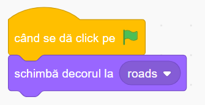

Jocul "Traversează în Siguranță" în Scratch
Povestea jocului
În acest joc captivant, îl vei controla pe Roadster, un personaj curajos care trebuie să traverseze strada aglomerată pentru a ajunge la un tort delicios. Misiunea ta este să-l ghidezi cu atenție, evitând mașinile care circulă în ambele sensuri.
Fii atent! Dacă Roadster este lovit de o mașină, jocul se termină. Traversează cu grijă toate benzile de circulație și ajută-l să ajungă la tortul mult dorit pentru a câștiga!
Ce vei învăța
- Controlul personajului cu tastele săgeți
- Crearea și mișcarea obstacolelor (mașini) folosind clone
- Detectarea coliziunilor între personaje
- Implementarea condițiilor de victorie și înfrângere
- Gestionarea evenimentelor și a mesajelor între personaje
Să începem!
Pentru a crea acest joc mai ușor, am pregătit un proiect starter cu mașinile și strada deja adăugate. Tu va trebui să adaugi personajul principal (Roadster), tortul și să programezi interacțiunile!
Deschide proiectul starterSfat: Apasă butonul "Vezi în interior" pentru a putea edita proiectul, apoi "Remixează" pentru a salva propria versiune!
1 Personajele jocului
Proiectul starter conține deja mașinile, dar trebuie să adaugi personajul principal și tortul:
Car 1, Car 2, Car 3, Car 4
Mașinile care se deplasează pe stradă și reprezintă obstacolele. Car 1 și Car 2 se deplasează de la stânga la dreapta, iar Car 3 și Car 4 se deplasează de la dreapta la stânga.
Roadster (trebuie adăugat)
Personajul principal, controlat de jucător. Va trebui să-l adaugi din biblioteca Scratch.
Cake (trebuie adăugat)
Obiectivul jocului, care trebuie atins pentru a câștiga. Va trebui să-l adaugi din biblioteca Scratch.
Cum să adaugi personajele lipsă:
- Click pe butonul "Alege un personaj" din colțul din dreapta jos al interfeței Scratch.
- Caută "Roadster" și "Cake" în biblioteca de personaje și adaugă-le în proiect.
- Redimensionează personajele după cum e necesar (Roadster la 30% din mărimea originală).
Sfat
Personajul Roadster are mai multe costume care vor permite animația atunci când se deplasează. Asigură-te că toate costumele sunt disponibile pentru a obține un efect vizual plăcut.
2 Programarea mașinilor
Mașinile reprezintă obstacolele principale din joc. Ele se vor mișca automat pe drumuri și vor crea un mediu dinamic pe care jucătorul trebuie să-l traverseze. Vom programa fiecare mașină să se deplaseze și să se cloenze:
Cum funcționează:
Codul de mai sus este pentru o mașină care se deplasează de la stânga la dreapta (Car 1). Iată cum funcționează:
- Inițializare - La începutul jocului, mașina:
- Se ascunde (nu va fi vizibilă direct)
- Se poziționează la coordonatele de start (X -260, Y -90)
- Creează clone de sine care vor apărea pe drum
- Comportamentul clonelor - Când o clonă este creată:
- Se face vizibilă
- Se deplasează continuu spre dreapta
- Verifică dacă a ajuns la marginea din dreapta (X > 260). Dacă da, se șterge
- Verifică dacă atinge personajul principal (Roadster). Dacă da, trimite mesajul "hit" pentru a anunța coliziunea
- Crearea continuă de clone - După ce creează o clonă, mașina așteaptă între 1 și 2 secunde și apoi creează o nouă clonă, creând astfel un flux continuu de mașini pe drum
Sfat pentru programarea celorlalte mașini
Celelalte mașini urmează un model similar, dar cu diferite coordonate de start și intervale de așteptare:
Setările pentru toate mașinile:
- Car 1: Se deplasează de la stânga la dreapta
- Poziție start: X = -260, Y = -90
- Dispare la: X > 260
- Interval de clonare: 1-2 secunde
- Car 2: Se deplasează de la stânga la dreapta
- Poziție start: X = -260, Y = -45
- Dispare la: X > 260
- Interval de clonare: 2-4 secunde
- Car 3: Se deplasează de la dreapta la stânga
- Poziție start: X = 250, Y = 90
- Dispare la: X < -250
- Interval de clonare: 3-6 secunde
- Car 4: Se deplasează de la dreapta la stânga
- Poziție start: X = 250, Y = 45
- Dispare la: X < -250
- Interval de clonare: 2-5 secunde
3 Programarea personajului principal (Roadster)
Acum vom programa personajul principal, Roadster, pe care jucătorul îl va controla cu ajutorul tastelor săgeți. Selectează personajul Roadster și adaugă următorul cod:
Cum funcționează:
- Inițializare - La începutul jocului, personajul:
- Se face vizibil
- Se poziționează la coordonatele de start (X -13, Y -158)
- Își setează dimensiunea la 30% din mărimea originală
- Controlul mișcării - Într-o buclă infinită:
- Verifică tastele săgeți:
- Săgeata sus: se orientează în sus (0 grade) și se deplasează 5 pași
- Săgeata jos: se orientează în jos (180 grade) și se deplasează 5 pași
- Săgeata dreapta: se orientează spre dreapta (90 grade) și se deplasează 5 pași
- Săgeata stânga: se orientează spre stânga (-90 grade) și se deplasează 5 pași
- Animație: Dacă o tastă săgeată este apăsată, schimbă la următorul costum pentru a crea animația de mișcare și așteaptă 0.2 secunde, altfel schimbă la un costum static.
- Verifică tastele săgeți:
- Gestionarea înfrângerii - Când primește mesajul "hit" de la o mașină, declanșează înfrângerea:
- Schimbă decorul la "oops" pentru a indica sfârșitul jocului
- Oprește toate scripturile pentru a finaliza jocul
Sfat
Poți ajusta viteza personajului modificând numărul de pași (5) din blocurile de mișcare. Un număr mai mare îl va face să se miște mai repede, ceea ce poate face jocul mai ușor sau mai dificil, în funcție de preferințele tale.
4 Programarea tortului (obiectivul jocului)
Tortul reprezintă obiectivul jocului. Când personajul principal (Roadster) ajunge la tort, jocul este câștigat. Selectează personajul Cake și adaugă următorul cod:
Cum funcționează:
- Inițializare - La începutul jocului, tortul:
- Se face vizibil
- Se poziționează la coordonatele inițiale
- Schimbare periodică de poziție - La fiecare 5 secunde, tortul își schimbă poziția. Acest lucru face jocul mai dinamic și interesant, oferind mai multe provocări pentru jucător.
- Condiția de victorie - Într-o buclă infinită:
- Verifică dacă personajul principal (Roadster) atinge tortul
- Dacă da, schimbă decorul la "welldone" pentru a indica victoria și oprește toate scripturile
Sfat
Poți modifica intervalul de 5 secunde dintre schimbările de poziție ale tortului pentru a face jocul mai ușor sau mai dificil. Un interval mai scurt va face ca tortul să se miște mai des, crescând dificultatea jocului.
5 Configurarea decorului
În ultimul pas, vom configura decorul pentru a gestiona condițiile de victorie și înfrângere. Selectează Scena și asigură-te că ai toate cele trei decoruri:
Decorurile necesare:
- Roads - Decorul principal al jocului, care afișează strada pe care personajul trebuie să o traverseze.
- Welldone - Decorul care apare când jucătorul câștigă (atinge tortul).
- Oops - Decorul care apare când jucătorul pierde (este lovit de o mașină).
Sfat
Poți personaliza decorurile de final pentru a face mesajele de victorie și înfrângere mai atractive și mai personalizate. De exemplu, poți adăuga un text care să felicite jucătorul sau să-l încurajeze să încerce din nou.
Adaugă următorul cod pentru scenă:
Cum funcționează codul pentru scenă:
- Inițializare - La începutul jocului, scena trece la decorul "roads".
6 Testează și îmbunătățește
Acum că toate elementele jocului sunt implementate, este timpul să îl testezi! Apasă steagul verde și încearcă să ghidezi personajul Roadster până la tort, evitând mașinile care se deplasează pe stradă.
Provocări pentru îmbunătățirea jocului
După ce ai terminat jocul de bază, încearcă aceste îmbunătățiri:
Adaugă efecte sonore și muzică
Adaugă sunete pentru mișcarea personajului, coliziuni, victorie și înfrângere.
Adaugă un cronometru
Implementează un timer care să limiteze timpul disponibil pentru a ajunge la tort.
Adaugă un sistem de scor
Crește scorul pe măsură ce personajul traversează cu succes fiecare bandă de circulație.
Adaugă semafoare
Implementează semafoare care să oprească temporar mașinile, facilitând traversarea.
Felicitări!
Ai creat un joc captivant de traversare a străzii în care trebuie să ghidezi un personaj pentru a ajunge la un tort delicios! Acest proiect ți-a permis să înveți despre controlul personajelor, clonarea obiectelor, detecția coliziunilor și crearea condițiilor de victorie și înfrângere. Acum poți:
- Împărtășește jocul cu prietenii și familia
- Personalizează-l adăugând propriile tale idei și îmbunătățiri
- Folosește aceste concepte pentru a crea alte jocuri similare